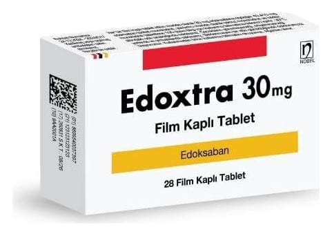

Edoxtra 30 mg Film Kaplı Tablet, 28 ADET

Ne için kullanılır
KT · Bölüm 1EDOXTRA pembe renkli, yuvarlak bombeli film kaplı tablettir. Kutu içerisinde, 28 film kaplı tablet içeren blister ambalajda sunulur.
EDOXTRA etkin madde olarak edoksaban içerir ve antikoagülanlar adı verilen, kan sulandırıcı madde olarak da bilinen bir ilaç grubuna aittir. Bu ilaç, kanın pıhtılaşmasını sağlayan önemli bir madde olan faktör Xa’yı engelleyerek kan pıhtısı oluşumunu önler.
EDOXTRA yetişkinlerde: - Valvüler olmayan atriyal fibrilasyon denilen bir tür düzensiz kalp atımı ve kalp yetmezliği, geçirilmiş inme veya yüksek tansiyon gibi en az bir ilave risk faktörünün bulunduğu hastalarda beyinde (inme) ve vücudun diğer kan damarlarında kan pıhtısı oluşumunu önlemek amacıyla kullanılır. - Bacaklardaki toplardamarlarda (derin ven trombozu) ve akciğerlerdeki kan damarlarındaki (pulmoner emboli) kan pıhtılarını tedavi etmek ve bacaklar ve/veya akciğerlerdeki kan damarlarında kan pıhtılarının tekrar oluşumunu önlemek amacıyla kullanılır.